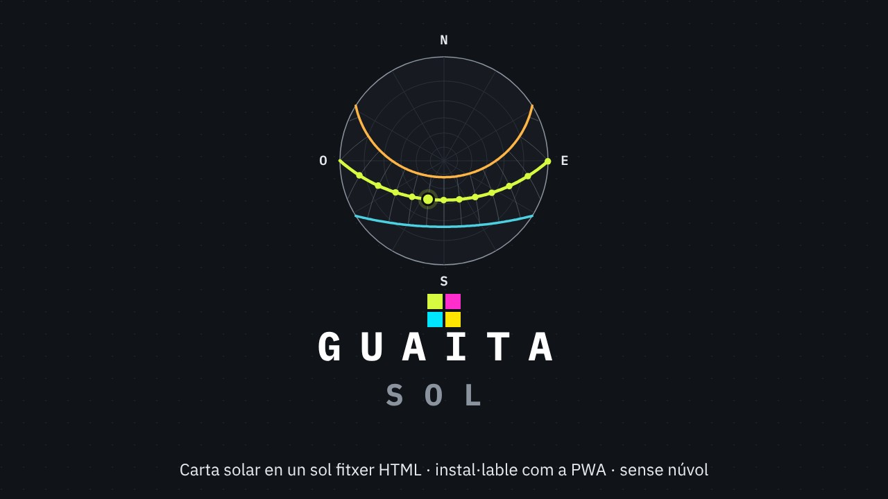
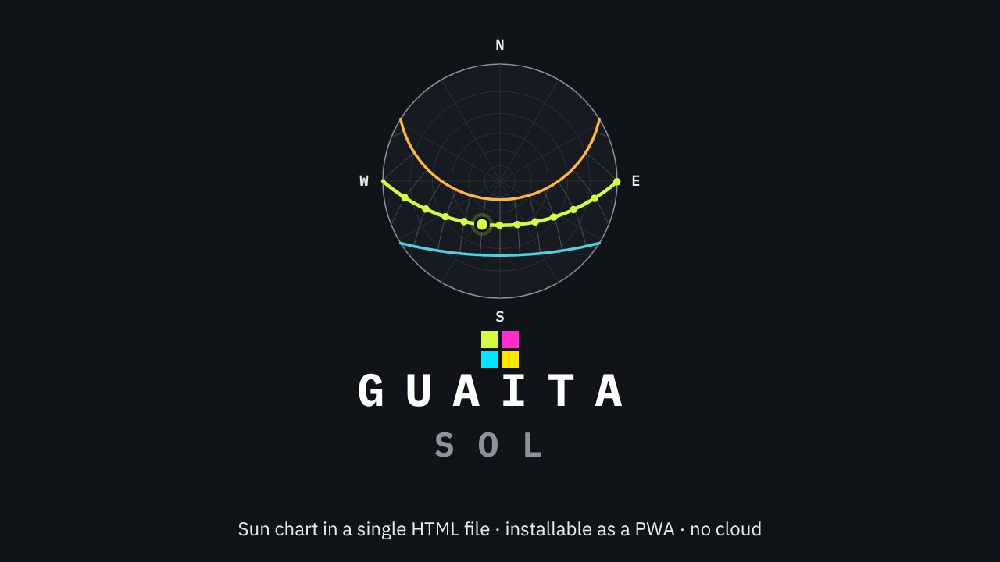

Funcions
Features
Diagrama d'alçada i azimut del Sol per a qualsevol lloc i dia, en projecció estereogràfica, equidistant o cilíndrica, amb hora solar o oficial.
Les trajectòries solars dibuixades sobre la imatge de la càmera, amb brúixola i calibratge amb el Sol.
Marca edificis, muntanyes i arbres apuntant la càmera o tocant el gràfic; importa i exporta JSON o CSV.
Hores del dia, pèrdua per obstacles, mapa anual (dia × hora), mitjana mensual i exportació CSV.
Algorisme NOAA verificat amb astronomy-engine: error inferior a 0,05° en alçada i 0,15° en azimut.
Cap CDN, cap servidor, cap cookie. Posició, perfil i imatges no surten del dispositiu.
Sun altitude and azimuth diagram for any place and day, in stereographic, equidistant or cylindrical projection, with solar or clock time.
Solar paths drawn over the live camera image, with compass and Sun calibration.
Mark buildings, mountains and trees by aiming the camera or tapping the chart; import and export JSON or CSV.
Hours per day, loss from obstacles, yearly map (day × time), monthly average and CSV export.
NOAA algorithm checked against astronomy-engine: error under 0.05° in altitude and 0.15° in azimuth.
No CDN, no server, no cookies. Position, profile and images never leave the device.
Aplicació (PWA)
App (PWA)
Una aplicació web progressiva: s'instal·la a la pantalla d'inici, s'obre sense barra d'adreces i funciona sense connexió.
Obre l'app → menú ⋮ → «Instal·la l'aplicació».
Botó Comparteix → «Afegeix a la pantalla d'inici».
Chrome o Edge: icona d'instal·lar a la barra d'adreces.
A progressive web app: it installs to the home screen, opens without an address bar and works offline.
Open the app → ⋮ menu → “Install app”.
Share button → “Add to Home Screen”.
Chrome or Edge: install icon in the address bar.
La càmera i els sensors només funcionen per HTTPS (com aquesta pàgina).
The camera and sensors only work over HTTPS (like this page).
Accés
Access
Català
Aplicació i manual en català.
App and guide in Catalan.
▶ Obre l'appOpen the appManual d'úsUser guideEnglish
Aplicació i manual en anglès.
App and guide in English.
▶ Obre l'appOpen the appManual d'úsUser guide